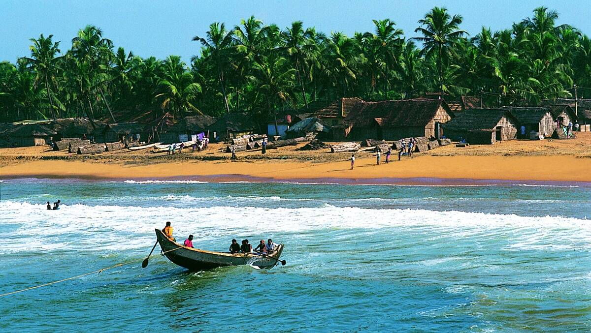
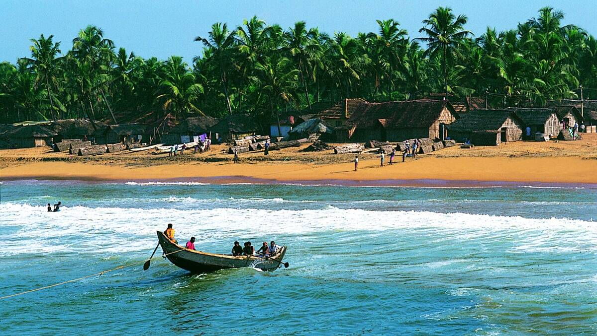

KAPPAD
1. KAPPAD
Kappad Beach has historically played an important role in the history of Kerala. On these shores, over 500 years ago in 1498, 170 men led by Vasco- da-Gama first stepped onto Kerala. The entire State, especially the Malabar Coast, would never be the same again. A visit to Kozhikode is incomplete without a visit to this legendary site. The spice route flourished through this Beach. A walk in and around the place gives one an idea of itshistorical relevance. The rocks and small hills add to its charm. The nearby shacks are always stocked with excellent local delicacies and tea. Migratory birds can be spotted occasionally as well. Kappad Beach is a truly majestic destination, which will always hold an important place in our history.

THUSHARAGIRI
2. THUSHARAGIRI
Caressed in the folds of the Western Ghats is the picturesque Thusharagiri Waterfalls. Lying 50 km from Kozhikode, the Thusharagiri Waterfalls comprises Erattumukku, Mazhavil Chattom, and Thumbithullum Para which can be reached through trekking. Thusharagiri or 'mist-capped peaks' gets its name from the beautiful silvery crown formed at the mountain top due to the waterfalls. Nature here will transport to a different dimension where time itself comes to a standstill. Having a dip in the cool water here is highly recommended as well, to revive one’s body and mind. The atmosphere on the way to waterfalls is filled with the aroma of various plantations that are on every traveller’s wish list like arecanut, pepper, ginger and spices. Mist-capped peaks, ebullient streams, boisterous waterfalls, dramatic backdrops of lush woods and plantations make it is a wonderful destination to enjoy nature at its finest.

KARIYATHUMPARA
3. KARIYATHUMAPARA
Kariathumpara is a beautiful cool place, almost like a hill station. It is in Kozhikode District of Kerala, and is just 45 kilometers away from the Kozhikode city. Direction-wise, coming from Kozhikode, Kariyathumpara is enroute the Kakkayam dam. Kakkayam dam is 15 kilometers further up from Kariyathumpara. Good spot for those who loves beautiful sceneries. Well known as a shooting location of wedding photography & Film Shooting. No entry fee here and hotels are comparitively few. U will have a wonderful feeling as you feel wind and see stream, lawns, birds,horse and many more..

JANAKIKKAD
4. JANAKIKKAD
Were you ever sapped of all your energy by the blistering heat of summer? Have you ever looked to retreat into a verdant landscape and rejuvenate yourself when bogged down by the dry and arid summer landscape? Well, then Janakikad is the destination where you can unwind yourself. Situated in the Maronthongara Panchayat, 7 km from Kuttiyadi, Janakikad comes under the Kuttiyadi range of Kozhikode forest division. Janakikad gets its name from the renowned statesman V. K. Krishna Menon’s sister, V. K Janaki Amma, to whom this 131-hectare land once belonged. The Janakikad Ecotourism project is a nature lover’s delight. Janakikad has in store unexplored wilderness which begins with the ticket counter in the shape of termite mounds and the animal figures that etch the gates of Janakikad. The forest has a wide biodiversity of plants. You can enjoy a leafy stroll under the canopy in Janakikad and indulge yourself in bird watching and butterfly tracking. A variety of bird species like Horn Bills and Gray Jungle Fowls and butterflies inhabit the forest. Enthusiasts can observe birds and bird life from tree-top houses. Rafting facilities are also provided. You can enjoy a dip in the cool waters of the Chavaramuzhi River, a tributary of Kuttiyadi which pats Janakikad. The ancient temple in the forest is yet another attraction. The trek through the forest, which is dense enough not to let the scorching summer rays penetrate and drain you of all your energy, is a wonderful experience with raw nature.